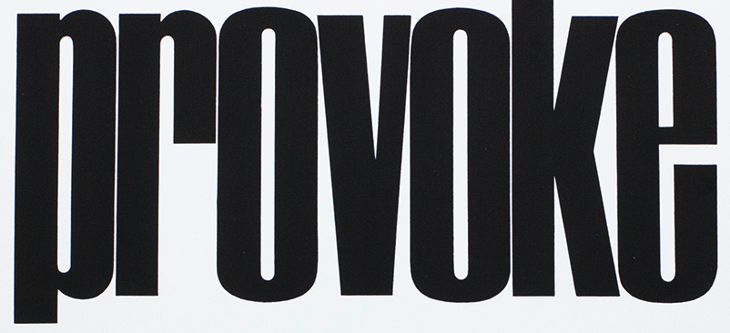

PROVOKE Magazine, Japan, 1960.
An expirmental photo publication for the avant-garde and Tokyo street life.
Issues 1,2,3 housed the works of post-war street photographer, Daido Moriyama.
Now, Issue 4 shows the works of today's Jun Yamamoto.
Enter the Tokyo Experiment Then and Now: The Streets